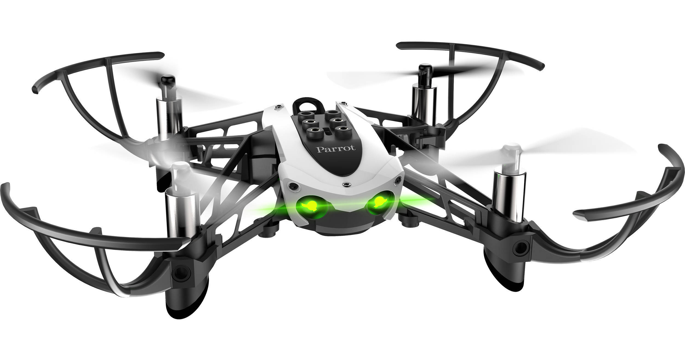
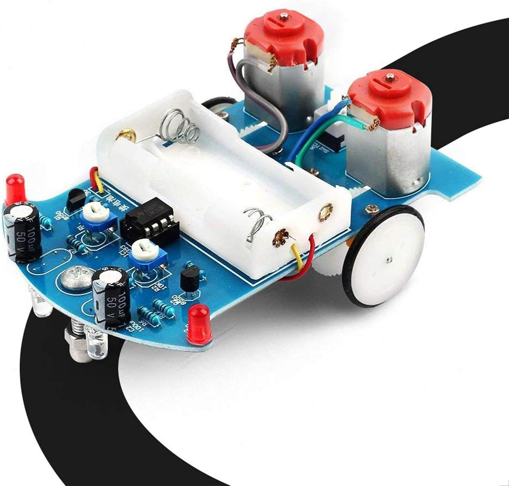

Following Land Station with Parrot Mambo
Description
The goal of this project is to develop a drone that follows a line following robot by detecting the landing station on top of the car.
Begin by building the line follower robot kit. Build a landing platform using cardboard or styrofoam with dimensions of 11x11 inches. Cover the platform with RGB-colored paper or tape.
Program the Parrot Mambo drone to track the landing station mounted on the moving line follower robot.
Modify the programming of the drone to initiate a controlled descent towards the landing station on the line follower robot while it is in motion. The descent should only be triggered when the drone detects the RGB-colored platform beneath it.
Equipment


Station Landing Demonstration
Line Following
Work Summary
This project uses Matlab and Simulink for computer vision and motor control.
The work is divided into 3 main parts, building the line following robot with the landing station on top, color detection program, and planning execution for the drone flight.
If the line following robot is not available, a color line following program for the drone is also possible.
Forward Kinematics


After finding the transformation matrices, we write them in MATLAB to find the position and orientation of the end-effector.
The final transformation matrix \( ^0H_6 \) is:
\[ \begin{bmatrix} R & t \\ 0 & 1 \end{bmatrix} \]
Here, \( R \) represents the rotation matrix and \( t \) represents the translation vector. So we can find the position (x, y, z) of the end-effector by outputting \( t \).
Inverse Kinematics

We use Matlab Inverse Kinematics Designer to solve this problem. We load the robots into Matlab, choose the BFGS Gradient solver algorithm, and enter our desired positions and orientations.